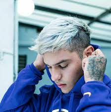
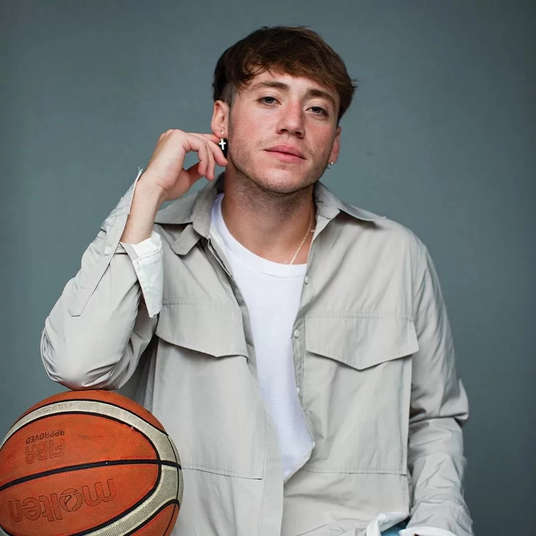

Trueno, Artista Argentino, Rap/Trap
conocido por su nombre artístico Trueno, es un rapero, cantante y Compositor argentino.
Danni Riba, Artista Argentino, Rap/Trap
Daniel Oscar Ribba, más conocido como Dani Ribba, es un cantante de Trap latino y rap argentino.
Paulo Londra, Artista Argentino, Rap/Trap
Londra surgió de las competencias de freestyle de plaza que se celebraban de forma amateur, como El Quinto Escalón.

Mc davo, Artista Mexicano, Rap/Trap
David Sierra Treviño, conocido como MC Davo, es un rapero y compositor mexicano.

Christian Nodal, Artista Mexicano, Regional mexicano
Christian Jesús González Nodal, conocido como Christian Nodal, es un músico, cantante y compositor mexicano. Nacido y criado en Sonora.